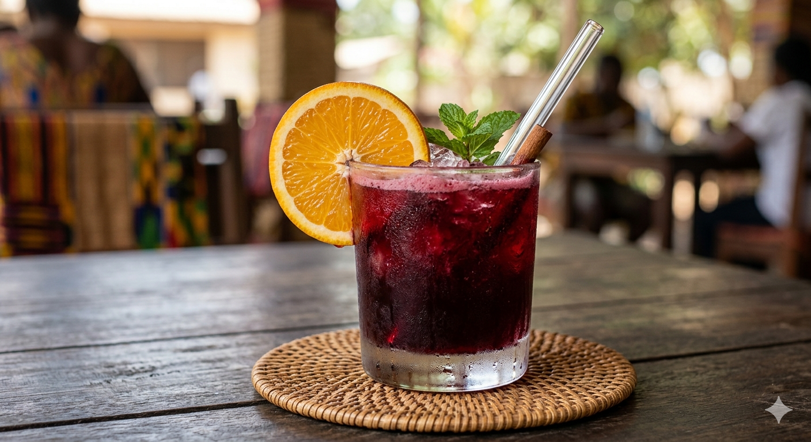

Sobolo (Hibiscus Tea/Drink)
Home

Description
Sobolo is the quintessential Ghanaian refresher. Made from dried hibiscus petals (locally known as bisaab), this drink is famous for its deep ruby color and its intense, spicy-sweet profile.
Ingredients
- 2 cups Dried Hibiscus petals (Bisaab)
- 1 cup Fresh Ginger (crushed or blended)
- 10-12 Hwentia (Grains of Selim)
- 1 tbsp Cloves (Peprɛ)
- 1 ripe Pineapple (peels for boiling, fruit for juice/garnish)
- 2 sticks of Cinnamon
- Sugar or honey (to taste)
- 1 small gallon Water
Steps
- Thoroughly wash the dried hibiscus petals in cold water to remove any dust. Place them in a large pot with 1 gallon of water.
- Add the pineapple peels, crushed ginger, cloves, hwentia, and cinnamon sticks to the pot. These are the "core dependencies" that give Sobolo its signature kick.
- Bring the mixture to a boil and let it simmer for 20–30 minutes. The water should turn a deep, dark purple-red.
- Turn off the heat and allow the mixture to cool slightly. Use a fine-mesh strainer to separate the liquid from the petals and spices.
- While the liquid is still warm, stir in your sugar or honey. For an extra tropical "patch," stir in freshly squeezed pineapple juice.
- Pour the Sobolo into glass bottles and refrigerate until ice-cold.
- Serve over ice with a slice of lemon, orange, or a sprig of mint.